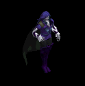
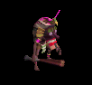
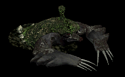
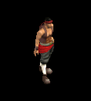
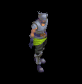
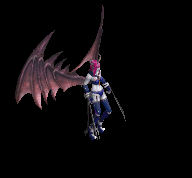
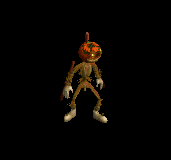
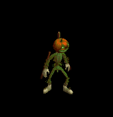

笛 をドロップするmob一覧
一覧ページへ
| ゴースト | アンデット | 一般1 | |||||||
|---|---|---|---|---|---|---|---|---|---|
 | 笛(410) | 翼(10) | 鍵(10) | マント(230) | イヤリング(210) | ブローチ(150) | 水晶(410) | ||
| イリュージョン | アンデット | 一般2 | |||||||
 | 笛(380) | 翼(250) | 矢(380) | マント(210) | イヤリング(190) | ブローチ(160) | 水晶(380) | 魔弾(380) | |
| ファントム | アンデット | 一般3 | |||||||
 | 笛(360) | 翼(240) | 矢(360) | マント(200) | イヤリング(180) | ブローチ(170) | 水晶(240) | 魔弾(360) | |
| バンシー | アンデット | セミ1 | |||||||
 | 笛(390) | 翼(260) | イベント(390) | マント(220) | イヤリング(200) | ブローチ(180) | 水晶(260) | ||
| 幻影 | アンデット | ボス1 | |||||||
 | 笛(470) | 翼(310) | 鍵(470) | マント(260) | イヤリング(240) | ブローチ(190) | 水晶(310) | ||
| 上級ヴァンパイア | アンデット | セミ1 | |||||||
 | 鞭(390) | 笛(260) | イベント(390) | 職業鎧(220) | 指輪(200) | 特殊1(160) | |||
| ドラキュラ | アンデット | ボス1 | |||||||
|  | 鞭(470) | 笛(310) | CP回復(470) | 職業鎧(260) | 指輪(240) | 特殊1(190) | |||
| レッドアイ信奉者 | 人間 | 一般1 | |||||||
 | 笛(410) | 牙(270) | イベント(410) | 鎧(230) | 槍投擲機(210) | 十字架(50) | 双剣(270) | ||
| 原人 | 人間 | 一般2 | |||||||
|  | 笛(380) | 牙(250) | イベント(380) | グローブ(210) | 槍投擲機(190) | 十字架(60) | 双剣(250) | ||
| 原始人 | 人間 | 一般3 | |||||||
 | 笛(360) | 牙(240) | 状態異常回復1(360) | 足(200) | 槍投擲機(180) | 十字架(70) | 双剣(240) | ||
| イーター | 人間 | セミ1 | |||||||
 | 笛(390) | 牙(260) | 状態異常回復1(390) | グローブ(220) | 槍投擲機(200) | 十字架(80) | 双剣(260) | ||
| 呪術者 | 人間 | ボス1 | |||||||
 | 笛(470) | 牙(310) | 状態異常回復1(470) | 足(260) | 槍投擲機(240) | 十字架(90) | 双剣(310) | ||
| レッドアイ魔法師 | 人間 | 一般4 | |||||||
 | ステッキ(300) | 笛(200) | 矢(300) | マント(170) | 冠(150) | ブローチ(180) | 魔弾(300) | ||
| レッドアイ元老 | 人間 | セミ2 | |||||||
 | ステッキ(420) | 笛(280) | 矢(420) | マント(230) | 冠(210) | ブローチ(200) | 魔弾(420) | ||
| レッドアイ元帥 | 人間 | ボス2 | |||||||
 | ステッキ(490) | 笛(330) | 弾(490) | マント(270) | イヤリング(250) | ブローチ(220) | |||
| アイウィング | 悪魔 | 一般3 | |||||||
 | 笛(360) | 翼(240) | 状態異常回復1(360) | 兜・帽子(200) | 冠(180) | 帰還(140) | 水晶(240) | ||
| ドゥームスフィア | 悪魔 | 一般4 | |||||||
 | 笛(300) | 翼(200) | 状態異常回復1(300) | 兜・帽子(170) | 首(150) | 帰還(120) | 水晶(200) | ||
| アルゴス | 悪魔 | セミ3 | |||||||
 | 笛(450) | 翼(300) | 鍵(450) | 兜・帽子(250) | 首(230) | 帰還(180) | 水晶(300) | ||
| ラットマン | 悪魔 | 一般1 | |||||||
 | 投擲(410) | 笛(270) | 弾(410) | 足(230) | 指輪(210) | 帰還(160) | |||
| ラティアン | 悪魔 | 一般3 | |||||||
 | 投擲(360) | 笛(240) | 弾(360) | 足(200) | 手首(180) | 帰還(140) | |||
| ラットキング | 悪魔 | ボス1 | |||||||
 | 投擲(470) | 笛(310) | 弾(470) | 足(260) | 冠(240) | 能力向上1(190) | |||
| ゴートマン | 悪魔 | 一般1 | |||||||
 | 笛(410) | 鈍器(270) | 状態異常回復2(100) | マント(230) | 冠(210) | 能力向上1(160) | |||
| 蟲の群れ | 動物 | 一般1 | |||||||
 | 笛(410) | 翼(270) | イベント(410) | グローブ(230) | イヤリング(210) | 帰還(160) | 水晶(270) | ||
| 鋏昆虫の群れ | 動物 | 一般2 | |||||||
 | 笛(380) | 翼(250) | イベント(380) | 腰(210) | 首(190) | 帰還(150) | 水晶(250) | ||
| 殺人蚊の群れ | 動物 | 一般3 | |||||||
 | 笛(360) | 翼(240) | イベント(360) | 足(200) | イヤリング(180) | 帰還(140) | 水晶(240) | ||
| イナゴの群れ | 動物 | セミ1 | |||||||
 | 笛(390) | 翼(260) | イベント(390) | 兜・帽子(220) | 首(200) | 帰還(160) | 水晶(260) | ||
| ディザースター | 動物 | ボス1 | |||||||
 | 笛(470) | 翼(310) | イベント(470) | マント(260) | イヤリング(240) | 帰還(190) | 水晶(310) | ||
| 野良犬 | 動物 | 一般1 | |||||||
 | 牙(410) | 笛(270) | 鍵(10) | 職業鎧(230) | 槍投擲機(210) | 特殊1(160) | 双剣(410) | ||
| ロードブローカー | 動物 | ボス1 | |||||||
|  | 笛(470) | ステッキ(310) | 弾(470) | 職業鎧(260) | 指輪(240) | 能力向上1(190) | |||
| ブラウンベアー | 動物 | 一般4 | |||||||
 | 牙(300) | 笛(200) | HP回復(300) | 足(170) | 爪(150) | 宝石(120) | 双剣(300) | ||
| キングベアー | 動物 | ボス1 | |||||||
 | 翼(470) | 笛(310) | 鍵(30) | 兜・帽子(260) | 爪(240) | 宝石(190) | 水晶(470) | ||
| パン | 神獣 | 一般1 | |||||||
 | 箒(270) | 笛(100) | 槍(270) | ||||||
| サティロス | 神獣 | 一般4 | |||||||
 | 箒(200) | 笛(100) | 槍(200) | ||||||
| ケンタウロス | 神獣 | セミ1 | |||||||
 | 箒(260) | 笛(100) | 槍(260) | ||||||
| ケンタウロス騎士 | 神獣 | セミ2 | |||||||
 | 箒(280) | 笛(100) | 槍(280) | ||||||
| ケンタウロス王 | 神獣 | ボス2 | |||||||
 | 箒(330) | 笛(100) | 槍(330) | ||||||
| ディムジェスター | 神獣 | 一般2 | |||||||
 | 水晶(250) | 笛(380) | 翼(250) | ||||||
| ボイドラスター | 神獣 | 一般3 | |||||||
 | 笛(360) | ステッキ(240) | |||||||
| ペールライト | 神獣 | ボス3 | |||||||
 | 笛(510) | ステッキ(340) | |||||||
| ゴーストEx | アンデット | 一般1 | |||||||
| 笛(410) | 翼(270) | 鍵(10) | マント(230) | イヤリング(210) | ブローチ(150) | 水晶(270) | ||
| イリュージョンEx | アンデット | 一般2 | |||||||
| 笛(380) | 翼(250) | 矢(380) | マント(210) | イヤリング(190) | ブローチ(160) | 水晶(250) | 魔弾(380) | |
| ファントムEx | アンデット | 一般3 | |||||||
| 笛(360) | 翼(240) | 矢(360) | マント(200) | イヤリング(180) | ブローチ(170) | 水晶(240) | 魔弾(360) | |
| バンシーEx | アンデット | セミ1 | |||||||
| 笛(450) | 翼(300) | イベント(450) | マント(250) | イヤリング(230) | ブローチ(180) | 水晶(300) | ||
| 幻影Ex | アンデット | ボス1 | |||||||
| 笛(1200) | 翼(800) | 鍵(1200) | マント(670) | イヤリング(600) | ブローチ(190) | 水晶(800) | ||
| 上級ヴァンパイアEx | アンデット | セミ1 | |||||||
| 鞭(450) | 笛(300) | イベント(450) | 職業鎧(250) | 指輪(230) | ブローチ(250) | |||
| ドラキュラEx | アンデット | ボス1 | |||||||
| 鞭(1200) | 笛(800) | CP回復(1200) | 職業鎧(670) | 指輪(600) | ブローチ(400) | ||||
| レッドアイ信奉者Ex | 人間 | 一般1 | |||||||
| 笛(410) | 牙(270) | イベント(410) | 鎧(230) | 槍投擲機(210) | 十字架(50) | 双剣(270) | ||
| 原人Ex | 人間 | 一般2 | |||||||
| 笛(380) | 牙(250) | イベント(380) | グローブ(210) | 槍投擲機(190) | 十字架(60) | 双剣(250) | |||
| 原始人Ex | 人間 | 一般3 | |||||||
| 笛(360) | 牙(240) | 状態異常回復1(360) | 足(200) | 槍投擲機(180) | 十字架(70) | 双剣(240) | ||
| イーターEx | 人間 | セミ1 | |||||||
| 笛(450) | 牙(300) | 状態異常回復1(450) | グローブ(250) | 槍投擲機(230) | 十字架(80) | 双剣(300) | ||
| 呪術者Ex | 人間 | ボス1 | |||||||
| 笛(1200) | 牙(800) | 状態異常回復1(1200) | 足(670) | 槍投擲機(600) | 十字架(90) | 双剣(800) | ||
| レッドアイ魔法師Ex | 人間 | 一般4 | |||||||
| ステッキ(300) | 笛(200) | 矢(300) | マント(170) | 冠(150) | ブローチ(180) | 魔弾(300) | ||
| レッドアイ元老Ex | 人間 | セミ2 | |||||||
| ステッキ(650) | 笛(430) | 矢(650) | マント(360) | 冠(330) | ブローチ(200) | 魔弾(650) | ||
| レッドアイ元帥Ex | 人間 | ボス2 | |||||||
| ステッキ(2000) | 笛(1330) | 弾(2000) | マント(1110) | イヤリング(1000) | ブローチ(220) | |||
| アイウィングEx | 悪魔 | 一般3 | |||||||
| 笛(360) | 翼(240) | 状態異常回復1(360) | 兜・帽子(200) | 冠(180) | 帰還(140) | 水晶(240) | ||
| ドゥームスフィアEx | 悪魔 | 一般4 | |||||||
| 笛(300) | 翼(200) | 状態異常回復1(300) | 兜・帽子(170) | 首(150) | 帰還(120) | 水晶(200) | ||
| アルゴスEx | 悪魔 | セミ3 | |||||||
| 笛(800) | 翼(530) | 鍵(50) | 兜・帽子(440) | 首(400) | 帰還(320) | 水晶(530) | ||
| ラットマンEx | 悪魔 | 一般1 | |||||||
| 投擲(410) | 笛(270) | 弾(410) | 足(230) | 指輪(210) | 帰還(160) | |||
| ラティアンEx | 悪魔 | 一般3 | |||||||
| 投擲(360) | 笛(240) | 弾(360) | 足(200) | 手首(180) | 帰還(140) | |||
| ラットキングEx | 悪魔 | ボス1 | |||||||
| 投擲(1200) | 笛(800) | 弾(1200) | 足(670) | 冠(600) | 能力向上1(480) | |||
| ゴートマンEx | 悪魔 | 一般1 | |||||||
| 笛(410) | 鈍器(270) | 状態異常回復2(100) | マント(230) | 冠(210) | 能力向上1(160) | |||
| 蟲の群れEx | 動物 | 一般1 | |||||||
| 笛(410) | 翼(270) | イベント(410) | グローブ(230) | イヤリング(210) | 帰還(160) | 水晶(270) | ||
| 鋏昆虫の群れEx | 動物 | 一般2 | |||||||
| 笛(380) | 翼(250) | イベント(380) | 腰(210) | 首(190) | 帰還(150) | 水晶(250) | ||
| 殺人蚊の群れEx | 動物 | 一般3 | |||||||
| 笛(360) | 翼(240) | イベント(360) | 足(200) | イヤリング(180) | 帰還(140) | 水晶(240) | ||
| イナゴの群れEx | 動物 | セミ1 | |||||||
| 笛(450) | 翼(300) | イベント(450) | 兜・帽子(250) | 首(230) | 帰還(180) | 水晶(300) | ||
| ディザースターEx | 動物 | ボス1 | |||||||
| 笛(1200) | 翼(800) | イベント(1200) | マント(670) | イヤリング(600) | 帰還(480) | 水晶(800) | ||
| 野良犬Ex | 動物 | 一般1 | |||||||
| 牙(410) | 笛(270) | 鍵(20) | 職業鎧(230) | 槍投擲機(210) | 特殊1(160) | 双剣(410) | ||
| ロードブローカーEx | 動物 | ボス1 | |||||||
| 笛(1200) | ステッキ(800) | 弾(1200) | 職業鎧(670) | 指輪(600) | 能力向上1(480) | ||||
| ブラウンベアーEx | 動物 | 一般4 | |||||||
| 牙(300) | 笛(200) | HP回復(300) | 足(170) | 爪(150) | 宝石(120) | 双剣(300) | ||
| キングベアーEx | 動物 | ボス1 | |||||||
| 翼(1200) | 笛(800) | 鍵(200) | 兜・帽子(670) | 爪(600) | 宝石(480) | 水晶(1200) | ||
| パンEx | 神獣 | 一般1 | |||||||
| 笛(410) | 槍(270) | 状態異常回復1(410) | 職業鎧(230) | 槍投擲機(210) | 宝石(160) | 箒(270) | ||
| サティロスEx | 神獣 | 一般4 | |||||||
| 笛(300) | 槍(200) | 状態異常回復1(300) | 職業鎧(170) | 槍投擲機(150) | 宝石(120) | 箒(200) | ||
| ケンタウロスEx | 神獣 | セミ1 | |||||||
| 笛(450) | 槍(300) | 状態異常回復1(450) | 職業鎧(250) | 槍投擲機(230) | 宝石(180) | 箒(300) | ||
| ケンタウロス騎士Ex | 神獣 | セミ2 | |||||||
| 笛(650) | 槍(430) | 状態異常回復1(650) | 職業鎧(360) | 槍投擲機(330) | 宝石(260) | 箒(430) | ||
| ダークエルフ王Ex | 神獣 | ボス2 | |||||||
| 笛(2000) | 槍(1330) | 状態異常回復1(2000) | 職業鎧(1110) | 槍投擲機(1000) | 宝石(800) | 箒(1330) | ||
| ディムジェスターEx | 神獣 | 一般2 | |||||||
| 笛(380) | 翼(250) | 盾(380) | 兜・帽子(210) | 指輪(190) | 特殊1(150) | 水晶(250) | ||
| ボイドラスターEx | 神獣 | 一般3 | |||||||
| 笛(360) | ステッキ(240) | 盾(360) | マント(200) | 指輪(180) | 特殊1(140) | |||
| ペールライトEx | 神獣 | ボス3 | |||||||
| 笛(2800) | ステッキ(1870) | 盾(2800) | 腰(1560) | 手首(1400) | 帰還(1120) | |||
| ゴーストZin | アンデット | 一般1 | |||||||
| 笛(1210) | 翼(810) | 鍵(70) | マント(670) | イヤリング(610) | ブローチ(150) | 水晶(810) | ||
| イリュージョンZin | アンデット | 一般2 | |||||||
| 笛(1380) | 翼(920) | 矢(1380) | マント(770) | イヤリング(690) | ブローチ(160) | 水晶(920) | 魔弾(1380) | |
| ファントムZin | アンデット | 一般3 | |||||||
| 笛(1560) | 翼(1040) | 矢(1560) | マント(870) | イヤリング(780) | ブローチ(170) | 水晶(1040) | 魔弾(1560) | |
| バンシーZin | アンデット | セミ1 | |||||||
| 笛(650) | 翼(430) | イベント(650) | マント(360) | イヤリング(330) | ブローチ(180) | 水晶(430) | ||
| 幻影Zin | アンデット | ボス1 | |||||||
| 笛(1000) | 翼(670) | 鍵(160) | マント(560) | イヤリング(500) | ブローチ(190) | 水晶(670) | ||
| 上級ヴァンパイアZin | アンデット | セミ1 | |||||||
| 鞭(650) | 笛(430) | イベント(650) | 職業鎧(360) | 指輪(330) | ブローチ(250) | |||
| ドラキュラZin | アンデット | ボス1 | |||||||
| 鞭(1000) | 笛(670) | CP回復(1000) | 職業鎧(560) | 指輪(500) | ブローチ(400) | ||||
| レッドアイ信奉者Zin | 人間 | 一般1 | |||||||
| 笛(1210) | 牙(810) | イベント(1210) | 鎧(670) | 槍投擲機(610) | 十字架(50) | 双剣(810) | ||
| 原人Zin | 人間 | 一般2 | |||||||
| 笛(1380) | 牙(920) | イベント(1380) | グローブ(770) | 槍投擲機(690) | 十字架(60) | 双剣(920) | |||
| 原始人Zin | 人間 | 一般3 | |||||||
| 笛(1560) | 牙(1040) | 状態異常回復1(1560) | 足(870) | 槍投擲機(780) | 十字架(70) | 双剣(1040) | ||
| イーターZin | 人間 | セミ1 | |||||||
| 笛(650) | 牙(430) | 状態異常回復1(650) | グローブ(360) | 槍投擲機(330) | 十字架(80) | 双剣(430) | ||
| 呪術者Zin | 人間 | ボス1 | |||||||
| 笛(1000) | 牙(670) | 状態異常回復1(1000) | 足(560) | 槍投擲機(500) | 十字架(90) | 双剣(670) | ||
| レッドアイ魔法師Zin | 人間 | 一般4 | |||||||
| ステッキ(1200) | 笛(800) | 矢(1200) | マント(670) | 冠(600) | ブローチ(180) | 魔弾(1200) | ||
| レッドアイ元老Zin | 人間 | セミ2 | |||||||
| ステッキ(750) | 笛(500) | 矢(750) | マント(420) | 冠(380) | ブローチ(200) | 魔弾(750) | ||
| レッドアイ元帥Zin | 人間 | ボス2 | |||||||
| ステッキ(1100) | 笛(730) | 弾(1100) | マント(610) | イヤリング(550) | ブローチ(220) | |||
| アイウィングZin | 悪魔 | 一般3 | |||||||
| 笛(1560) | 翼(1040) | 状態異常回復1(1560) | 兜・帽子(870) | 冠(780) | 帰還(620) | 水晶(1040) | ||
| ドゥームスフィアZin | 悪魔 | 一般4 | |||||||
| 笛(1200) | 翼(800) | 状態異常回復1(1200) | 兜・帽子(670) | 首(600) | 帰還(480) | 水晶(800) | ||
| アルゴスZin | 悪魔 | セミ3 | |||||||
| 笛(900) | 翼(600) | 鍵(40) | 兜・帽子(500) | 首(450) | 帰還(360) | 水晶(600) | ||
| ラットマンZin | 悪魔 | 一般1 | |||||||
| 投擲(1210) | 笛(810) | 弾(1210) | 足(670) | 指輪(610) | 帰還(480) | |||
| ラティアンZin | 悪魔 | 一般3 | |||||||
| 投擲(1560) | 笛(1040) | 弾(1560) | 足(870) | 手首(780) | 帰還(620) | |||
| ラットキングZin | 悪魔 | ボス1 | |||||||
| 投擲(1000) | 笛(670) | 弾(1000) | 足(560) | 冠(500) | 能力向上1(400) | |||
| ゴートマンZin | 悪魔 | 一般1 | |||||||
| 笛(1210) | 鈍器(810) | 状態異常回復2(300) | マント(670) | 冠(610) | 能力向上1(480) | |||
| 蟲の群れZin | 動物 | 一般1 | |||||||
| 笛(1210) | 翼(810) | イベント(1210) | グローブ(670) | イヤリング(610) | 帰還(480) | 水晶(810) | ||
| 鋏昆虫の群れZin | 動物 | 一般2 | |||||||
| 笛(1380) | 翼(920) | イベント(1380) | 腰(770) | 首(690) | 帰還(550) | 水晶(920) | ||
| 殺人蚊の群れZin | 動物 | 一般3 | |||||||
| 笛(1560) | 翼(1040) | イベント(1560) | 足(870) | イヤリング(780) | 帰還(620) | 水晶(1040) | ||
| イナゴの群れZin | 動物 | セミ1 | |||||||
| 笛(650) | 翼(430) | イベント(650) | 兜・帽子(360) | 首(330) | 帰還(260) | 水晶(430) | ||
| ディザースターZin | 動物 | ボス1 | |||||||
| 笛(1000) | 翼(670) | イベント(1000) | マント(560) | イヤリング(500) | 帰還(400) | 水晶(670) | ||
| 野良犬Zin | 動物 | 一般1 | |||||||
| 牙(1210) | 笛(810) | 鍵(30) | 職業鎧(670) | 槍投擲機(610) | 特殊1(480) | 双剣(1210) | ||
| ロードブローカーZin | 動物 | ボス1 | |||||||
| 笛(1000) | ステッキ(670) | 弾(1000) | 職業鎧(560) | 指輪(500) | 能力向上1(400) | ||||
| ブラウンベアーZin | 動物 | 一般4 | |||||||
| 牙(1200) | 笛(800) | HP回復(1200) | 足(670) | 爪(600) | 宝石(480) | 双剣(1200) | ||
| キングベアーZin | 動物 | ボス1 | |||||||
| 翼(1000) | 笛(670) | 鍵(130) | 兜・帽子(560) | 爪(500) | 宝石(400) | 水晶(1000) | ||
| パンZin | 神獣 | 一般1 | |||||||
| 笛(1210) | 槍(810) | 状態異常回復1(1210) | 職業鎧(670) | 槍投擲機(610) | 宝石(480) | 箒(810) | ||
| サティロスZin | 神獣 | 一般4 | |||||||
| 笛(1200) | 槍(800) | 状態異常回復1(1200) | 職業鎧(670) | 槍投擲機(600) | 宝石(480) | 箒(800) | ||
| ケンタウロスZin | 神獣 | セミ1 | |||||||
| 笛(650) | 槍(430) | 状態異常回復1(650) | 職業鎧(360) | 槍投擲機(330) | 宝石(260) | 箒(430) | ||
| ケンタウロス騎士Zin | 神獣 | セミ2 | |||||||
| 笛(750) | 槍(500) | 状態異常回復1(750) | 職業鎧(420) | 槍投擲機(380) | 宝石(300) | 箒(500) | ||
| ケンタウロス王Zin | 神獣 | ボス2 | |||||||
| 笛(1100) | 槍(730) | 状態異常回復1(1100) | 職業鎧(610) | 槍投擲機(550) | 宝石(440) | 箒(730) | ||
| ディムジェスターZin | 神獣 | 一般2 | |||||||
| 笛(1380) | 翼(920) | 盾(1380) | 兜・帽子(770) | 指輪(690) | 特殊1(550) | 水晶(920) | ||
| ボイドラスターZin | 神獣 | 一般3 | |||||||
| 笛(1560) | ステッキ(1040) | 盾(1560) | マント(870) | 指輪(780) | 特殊1(620) | |||
| ペールライトZin | 神獣 | ボス3 | |||||||
| 笛(1200) | ステッキ(800) | 盾(1200) | 腰(670) | 手首(600) | 帰還(480) | |||
 | 弓(1560) | 片手剣(1040) | 矢(1560) | グローブ(900) | 手首(780) | 腕刺青(170) | クロー(1040) | 銃(1560) | 魔弾(1560) |
| ならず者 Zin | 人間 | 一般3 | |||||||
|  | 両手剣(70) | 爪(200) | 腕刺青(130) | 笛(100) | 弓(30) | HP回復(40) | 鎌(70) | 銃(30) | |
| ならず者1 Zin | 人間 | 一般4 | |||||||
 | 鍵(50) | 爪(150) | 牙(100) | 笛(80) | 状態異常回復1(20) | 盾(30) | 双剣(100) | ||
| ならず者4 Zin | 人間 | ボス1 | |||||||
 | 投擲(250) | 爪(750) | 牙(500) | 笛(400) | 弓(100) | 盾(150) | 双剣(500) | 銃(100) | |
| 襲撃団 Zin | 人間 | 一般4 | |||||||
 | 鍵(50) | 爪(150) | 牙(100) | 笛(80) | 弓(20) | HP回復(30) | 双剣(100) | 銃(20) | |
| 襲撃団2 Zin | 人間 | セミ3 | |||||||
 | 鍵(180) | ブローチ(530) | 腕刺青(350) | 笛(280) | 弓(70) | 盾(110) | 銃(70) | ||
| 襲撃団4 Zin | 人間 | ボス3 | |||||||
|  | 宝石(600) | 爪(1800) | 帰還(1200) | 笛(960) | 腕刺青(240) | 盾(360) | |||
| ストリート戦士 Zin | 人間 | セミ2 | |||||||
 | 能力向上2(140) | マント(410) | 帰還(280) | 笛(220) | 弓(60) | 盾(80) | 銃(60) | ||
| ルーンファイター Zin | 人間 | セミ3 | |||||||
 | 両手剣(180) | 爪(530) | 牙(350) | 笛(280) | 状態異常回復1(70) | HP回復(110) | 鎌(180) | 双剣(350) | |
| 仙人 Zin | 人間 | ボス3 | |||||||
 | 投擲(600) | 職業鎧(1800) | 宝石(1200) | 笛(960) | 弓(240) | 盾(360) | 銃(240) | ||
| 魔女1 Zin | 悪魔 | セミ1 | |||||||
 | 鎧(230) | ブローチ(280) | CP回復(120) | 笛(70) | ステッキ(40) | イベント(20) | |||
| 魔女2 Zin | 悪魔 | ボス1 | |||||||
 | 鍵(650) | イヤリング(800) | 腕刺青(330) | 笛(200) | 状態異常回復1(100) | 盾(50) | |||
| 魔女4 Zin | 悪魔 | ボス3 | |||||||
 | 鎧(1560) | イヤリング(1920) | 帰還(790) | 笛(480) | 状態異常回復1(240) | HP回復(120) | |||
| サキュバス Zin | 悪魔 | 一般4 | |||||||
 | 鎧(130) | ブローチ(160) | 弾(70) | 笛(40) | ステッキ(20) | HP回復(10) | |||
| サキュバス2 Zin | 悪魔 | セミ3 | |||||||
 | 鍵(460) | イヤリング(560) | 腕刺青(230) | 笛(140) | 状態異常回復1(70) | 盾(40) | |||
| サキュバス3 Zin | 悪魔 | ボス2 | |||||||
 | 鎧(1170) | 状態異常回復2(1440) | 足(590) | 笛(360) | ステッキ(180) | CP回復(90) | |||
| パンタズドリーム Zin | 悪魔 | セミ1 | |||||||
 | 鎧(230) | ブローチ(280) | 足(120) | 笛(70) | ステッキ(40) | 杖(20) | 本(20) | ||
| パンタズドリーム1 Zin | 悪魔 | セミ2 | |||||||
|  | 鍵(360) | イヤリング(440) | 帰還(180) | 笛(110) | ステッキ(60) | 盾(30) | |||
| パンタズドリーム2 Zin | 悪魔 | セミ3 | |||||||
 | 鎧(460) | イヤリング(560) | 足(230) | 笛(140) | 状態異常回復1(70) | イベント(40) | |||
| パンタズドリーム4 Zin | 悪魔 | ボス3 | |||||||
 | 鎧(1560) | イヤリング(1920) | 足(790) | 笛(480) | 状態異常回復1(240) | 盾(120) | |||
| パンプキンヘッド1 Zin | 悪魔 | セミ1 | |||||||
|  | 指輪(230) | 首(280) | マント(120) | 笛(70) | 状態異常回復1(40) | イベント(20) | |||
| パンプキンヘッド2 Zin | 悪魔 | セミ3 | |||||||
|  | 鍵(460) | ブローチ(560) | CP回復(230) | 笛(140) | 腰(70) | グローブ(40) | |||
| パンプキンヘッド4 Zin | 悪魔 | ボス2 | |||||||
 | 指輪(1170) | 首(1440) | 足(590) | 笛(360) | 腰(180) | グローブ(90) | |||
| ジャックランタン Zin | 悪魔 | セミ1 | |||||||
 | 鍵(230) | 首(280) | 足(120) | 笛(70) | 状態異常回復1(40) | イベント(20) | |||
| ジャックランタン1 Zin | 悪魔 | セミ2 | |||||||
 | 指輪(360) | ブローチ(440) | 腕刺青(180) | 笛(110) | 腰(60) | グローブ(30) | |||
| ジャックランタン3 Zin | 悪魔 | ボス2 | |||||||
 | 能力向上2(1170) | 首(1440) | 帰還(590) | 笛(360) | 腰(180) | グローブ(90) | |||
| エルダーパンプキン1 Zin | 悪魔 | セミ3 | |||||||
 | 鍵(460) | 首(560) | 足(230) | 笛(140) | 状態異常回復1(70) | グローブ(40) | |||
| エルダーパンプキン3 Zin | 悪魔 | ボス2 | |||||||
 | 宝石(1170) | 首(1440) | 帰還(590) | 笛(360) | 肩刺青(180) | イベント(90) | |||
| エルダーパンプキン4 Zin | 悪魔 | ボス3 | |||||||
 | 能力向上2(1560) | 首(1920) | CP回復(790) | 笛(480) | 腰(240) | グローブ(120) | |||
| 使徒 Zin | 神獣 | 一般3 | |||||||
 | 鎧(120) | 鈍器(170) | 腕刺青(90) | 笛(10) | 肩刺青(30) | HP回復(70) | |||
| 使徒1 Zin | 神獣 | セミ1 | |||||||
 | 能力向上2(160) | 鈍器(230) | スリング(120) | 笛(20) | CP回復(40) | 盾(90) | |||
| 使徒3 Zin | 神獣 | ボス2 | |||||||
 | 鎧(810) | 鈍器(1170) | スリング(630) | 笛(90) | 矢(180) | イベント(450) | 魔弾(180) | ||
| 使徒4 Zin | 神獣 | ボス3 | |||||||
 | 鎧(1080) | ブローチ(1560) | スリング(840) | 笛(120) | 状態異常回復1(240) | 盾(600) | |||
| 審判官 Zin | 神獣 | 一般4 | |||||||
 | 能力向上2(90) | 鈍器(130) | 帰還(70) | 笛(10) | 矢(20) | HP回復(50) | 魔弾(20) | ||
| 審判官1 Zin | 神獣 | セミ2 | |||||||
 | 鎧(250) | 状態異常回復2(360) | スリング(190) | 笛(30) | 肩刺青(60) | 盾(140) | |||
| 審判官3 Zin | 神獣 | ボス2 | |||||||
 | 鎧(810) | ブローチ(1170) | スリング(630) | 笛(90) | 腕刺青(180) | 盾(450) | |||
| 審判官4 Zin | 神獣 | ボス3 | |||||||
 | 能力向上2(1080) | 鈍器(1560) | スリング(840) | 笛(120) | 矢(240) | イベント(600) | 魔弾(240) | ||
| ウィークネス天使 Zin | 神獣 | セミ1 | |||||||
 | 鎧(160) | 鈍器(230) | スリング(120) | 笛(20) | 状態異常回復1(40) | 盾(90) | |||
| ウィークネス天使1 Zin | 神獣 | セミ2 | |||||||
 | 能力向上2(250) | ブローチ(360) | スリング(190) | 笛(30) | 矢(60) | 盾(140) | 魔弾(60) | ||
| ウィークネス天使3 Zin | 神獣 | ボス1 | |||||||
 | 鎧(450) | 鈍器(650) | スリング(350) | 笛(50) | 矢(100) | 盾(250) | 魔弾(100) | ||
| ウィークネス天使4 Zin | 神獣 | ボス3 | |||||||
 | 鎧(1080) | 鈍器(1560) | スリング(840) | 笛(120) | 矢(240) | 肩刺青(600) | 魔弾(240) | ||
| 悪霊 | 神獣 | 一般2 | |||||||
| 水晶(250) | 笛(380) | 翼(250) | ||||||
| ゴースト | アンデット | 一般1 | |||||||
| 笛(410) | 翼(10) | 鍵(10) | マント(230) | イヤリング(210) | ブローチ(150) | 水晶(10) | ||
| 幽霊 | アンデット | 一般2 | |||||||
| 笛(380) | 翼(250) | 矢(380) | マント(210) | イヤリング(190) | ブローチ(160) | 水晶(250) | 魔弾(380) | |
| スペクター | アンデット | 一般3 | |||||||
| 笛(360) | 翼(240) | 矢(360) | マント(200) | イヤリング(180) | ブローチ(170) | 水晶(240) | 魔弾(360) | |
| スクリマー | アンデット | セミ1 | |||||||
| 笛(390) | 翼(260) | イベント(390) | マント(220) | イヤリング(200) | ブローチ(180) | 水晶(260) | ||
| ファントム | アンデット | ボス1 | |||||||
| 笛(470) | 翼(310) | 鍵(470) | マント(260) | イヤリング(240) | ブローチ(190) | 水晶(310) | ||
| ゴースト Ex | アンデット | 一般1 | |||||||
| 笛(410) | 翼(270) | 鍵(10) | マント(230) | イヤリング(210) | ブローチ(150) | 水晶(270) | ||
| 幽霊 Ex | アンデット | 一般2 | |||||||
| 笛(380) | 翼(250) | 矢(380) | マント(210) | イヤリング(190) | ブローチ(160) | 水晶(250) | 魔弾(380) | |
| スペクター Ex | アンデット | 一般3 | |||||||
| 笛(360) | 翼(240) | 矢(360) | マント(200) | イヤリング(180) | ブローチ(170) | 水晶(240) | 魔弾(360) | |
| スクリマー Ex | アンデット | セミ1 | |||||||
| 笛(450) | 翼(300) | イベント(450) | マント(250) | イヤリング(230) | ブローチ(180) | 水晶(300) | ||
| ファントム Ex | アンデット | ボス1 | |||||||
| 笛(1200) | 翼(800) | 鍵(1200) | マント(670) | イヤリング(600) | ブローチ(190) | 水晶(800) | ||
| レッドアイ魔法師 | 人間 | 一般4 | |||||||
| ステッキ(300) | 笛(200) | 矢(300) | マント(170) | 冠(150) | ブローチ(180) | 魔弾(300) | ||
| レッドアイ隊長 | 人間 | セミ2 | |||||||
| ステッキ(420) | 笛(280) | 矢(420) | マント(230) | 冠(210) | ブローチ(200) | 魔弾(420) | ||
| レッドアイ議長 | 人間 | ボス2 | |||||||
| ステッキ(490) | 笛(330) | 弾(490) | マント(270) | イヤリング(250) | ブローチ(220) | |||
| レッドアイ魔法師 Ex | 人間 | 一般4 | |||||||
| ステッキ(300) | 笛(200) | 矢(300) | マント(170) | 冠(150) | ブローチ(180) | 魔弾(300) | ||
| レッドアイ隊長 Ex | 人間 | セミ2 | |||||||
| ステッキ(650) | 笛(430) | 矢(650) | マント(360) | 冠(330) | ブローチ(200) | 魔弾(650) | ||
| レッドアイ議長 Ex | 人間 | ボス2 | |||||||
| ステッキ(2000) | 笛(1330) | 弾(2000) | マント(1110) | イヤリング(1000) | ブローチ(220) | |||
| 悪霊 Ex | 神獣 | 一般2 | |||||||
| 笛(380) | 翼(250) | 盾(380) | 兜・帽子(210) | 指輪(190) | 特殊1(150) | 水晶(250) | ||
| 番人 | 悪魔 | 一般3 | |||||||
| 笛(360) | 翼(240) | 状態異常回復1(360) | 兜・帽子(200) | 冠(180) | 帰還(140) | 水晶(240) | ||
| 監視者 | 悪魔 | 一般4 | |||||||
| 笛(300) | 翼(200) | 状態異常回復1(300) | 兜・帽子(170) | 首(150) | 帰還(120) | 水晶(200) | ||
| ガウス | 悪魔 | セミ3 | |||||||
| 笛(450) | 翼(300) | 鍵(450) | 兜・帽子(250) | 首(230) | 帰還(180) | 水晶(300) | ||
| 見張り Ex | 悪魔 | 一般3 | |||||||
| 笛(360) | 翼(240) | 状態異常回復1(360) | 兜・帽子(200) | 冠(180) | 帰還(140) | 水晶(240) | ||
| 監視者 Ex | 悪魔 | 一般4 | |||||||
| 笛(300) | 翼(200) | 状態異常回復1(300) | 兜・帽子(170) | 首(150) | 帰還(120) | 水晶(200) | ||
| ガウス Ex | 悪魔 | セミ3 | |||||||
| 笛(800) | 翼(530) | 鍵(50) | 兜・帽子(440) | 首(400) | 帰還(320) | 水晶(530) | ||
| ヴァンパイア男爵 | アンデット | セミ1 | |||||||
| 鞭(390) | 笛(260) | イベント(390) | 職業鎧(220) | 指輪(200) | 特殊1(160) | |||
| ヴァンパイア公爵 | アンデット | ボス1 | |||||||
| 鞭(470) | 笛(310) | CP回復(470) | 職業鎧(260) | 指輪(240) | 特殊1(190) | ||||
| ヴァンパイア男爵 Ex | アンデット | セミ1 | |||||||
| 鞭(450) | 笛(300) | イベント(450) | 職業鎧(250) | 指輪(230) | ブローチ(250) | |||
| ヴァンパイア公爵 Ex | アンデット | ボス1 | |||||||
| 鞭(1200) | 笛(800) | CP回復(1200) | 職業鎧(670) | 指輪(600) | ブローチ(400) | ||||
| 昆虫の大群 | 動物 | 一般2 | |||||||
| 笛(380) | 翼(250) | イベント(380) | 腰(210) | 首(190) | 帰還(150) | 水晶(250) | ||
| 蚊の大群 | 動物 | 一般3 | |||||||
| 笛(360) | 翼(240) | イベント(360) | 足(200) | イヤリング(180) | 帰還(140) | 水晶(240) | ||
| イナゴの大群 | 動物 | セミ1 | |||||||
| 笛(390) | 翼(260) | イベント(390) | 兜・帽子(220) | 首(200) | 帰還(160) | 水晶(260) | ||
| 殺人昆虫の大群 | 動物 | ボス1 | |||||||
| 笛(470) | 翼(310) | イベント(470) | マント(260) | イヤリング(240) | 帰還(190) | 水晶(310) | ||
| 昆虫の大群 Ex | 動物 | 一般2 | |||||||
| 笛(380) | 翼(250) | イベント(380) | 腰(210) | 首(190) | 帰還(150) | 水晶(250) | ||
| 蚊の大群 Ex | 動物 | 一般3 | |||||||
| 笛(360) | 翼(240) | イベント(360) | 足(200) | イヤリング(180) | 帰還(140) | 水晶(240) | ||
| イナゴの大群 Ex | 動物 | セミ1 | |||||||
| 笛(450) | 翼(300) | イベント(450) | 兜・帽子(250) | 首(230) | 帰還(180) | 水晶(300) | ||
| 殺人昆虫の大群 Ex | 動物 | ボス1 | |||||||
| 笛(1200) | 翼(800) | イベント(1200) | マント(670) | イヤリング(600) | 帰還(480) | 水晶(800) | ||
| デーモン傭兵 | 悪魔 | 一般1 | |||||||
| 笛(410) | 鈍器(270) | 状態異常回復2(100) | マント(230) | 冠(210) | 能力向上1(160) | |||
| デーモン傭兵 Ex | 悪魔 | 一般1 | |||||||
| 笛(410) | 鈍器(270) | 状態異常回復2(100) | マント(230) | 冠(210) | 能力向上1(160) | |||
| さすらう傭兵 Zin | 人間 | 一般4 | |||||||
| 両手剣(70) | 爪(200) | 腕刺青(130) | 笛(100) | 弓(30) | HP回復(40) | 鎌(70) | 銃(30) | ||
| サキュバス Zin | 悪魔 | 一般4 | |||||||
| 鎧(130) | ブローチ(160) | 弾(70) | 笛(40) | ステッキ(20) | HP回復(10) | |||
| アーカン Zin | 神獣 | 一般4 | |||||||
| 能力向上2(90) | 鈍器(130) | 帰還(70) | 笛(10) | 矢(20) | HP回復(50) | 魔弾(20) | ||
| 時の猛獣 Zin | 動物 | ボス1 | |||||||
| 翼(1000) | 笛(670) | 鍵(130) | 兜・帽子(560) | 爪(500) | 宝石(400) | 水晶(1000) | ||
| ガウス Zin | 悪魔 | セミ3 | |||||||
| 笛(900) | 翼(600) | 鍵(40) | 兜・帽子(500) | 首(450) | 帰還(360) | 水晶(600) | ||
| さすらう傭兵 Zin | 人間 | 一般4 | |||||||
| 両手剣(70) | 爪(200) | 腕刺青(130) | 笛(100) | 弓(30) | HP回復(40) | 鎌(70) | 銃(30) | ||
| サキュバス Zin | 悪魔 | 一般4 | |||||||
| 鎧(130) | ブローチ(160) | 弾(70) | 笛(40) | ステッキ(20) | HP回復(10) | |||
| スイッチモグラZin | 動物 | ボス1 | |||||||
| 笛(1000) | ステッキ(670) | 弾(1000) | 職業鎧(560) | 指輪(500) | 能力向上1(400) | ||||
| フィクサー Zin | 悪魔 | ボス3 | |||||||
| 鎧(1560) | イヤリング(1920) | 足(790) | 笛(480) | 状態異常回復1(240) | 盾(120) | |||
| ボイドラスターEv | 神獣 | 一般3 | |||||||
| 笛(1560) | ステッキ(1040) | 盾(1560) | マント(870) | 指輪(780) | 特殊1(620) | |||
| 原始人Ev | 人間 | 一般3 | |||||||
| 笛(1560) | 牙(1040) | 状態異常回復1(1560) | 足(870) | 槍投擲機(780) | 十字架(70) | 双剣(1040) | ||
| アイウィングEv | 悪魔 | 一般3 | |||||||
| 笛(1560) | 翼(1040) | 状態異常回復1(1560) | 兜・帽子(870) | 冠(780) | 帰還(620) | 水晶(1040) | ||
| ラティアンEv | 悪魔 | 一般3 | |||||||
| 投擲(1560) | 笛(1040) | 弾(1560) | 足(870) | 手首(780) | 帰還(620) | |||
| ファントムEv | アンデット | 一般3 | |||||||
| 笛(1560) | 翼(1040) | 矢(1560) | マント(870) | イヤリング(780) | ブローチ(170) | 水晶(1040) | 魔弾(1560) | |
| 殺人蚊の群れEv | 動物 | 一般3 | |||||||
| 笛(1560) | 翼(1040) | イベント(1560) | 足(870) | イヤリング(780) | 帰還(620) | 水晶(1040) | ||
| レッドアイ魔法師Ev | 人間 | 一般4 | |||||||
| ステッキ(1200) | 笛(800) | 矢(1200) | マント(670) | 冠(600) | ブローチ(180) | 魔弾(1200) | ||
| ドゥームスフィアEv | 悪魔 | 一般4 | |||||||
| 笛(1200) | 翼(800) | 状態異常回復1(1200) | 兜・帽子(670) | 首(600) | 帰還(480) | 水晶(800) | ||
| ブラウンベアーEv | 動物 | 一般4 | |||||||
| 牙(1200) | 笛(800) | HP回復(1200) | 足(670) | 爪(600) | 宝石(480) | 双剣(1200) | ||
| サティロスEv | 神獣 | 一般4 | |||||||
| 笛(1200) | 槍(800) | 状態異常回復1(1200) | 職業鎧(670) | 槍投擲機(600) | 宝石(480) | 箒(800) | ||
| バンシーEv | アンデット | セミ1 | |||||||
| 笛(650) | 翼(430) | イベント(650) | マント(360) | イヤリング(330) | ブローチ(180) | 水晶(430) | ||
| ゴーストSp | アンデット | 一般4 | |||||||
| 笛(1200) | 翼(800) | 鍵(100) | マント(700) | イヤリング(600) | ブローチ(150) | 水晶(800) | ||
| サキュバスSp | 悪魔 | セミ1 | |||||||
 | 鎧(1200) | ブローチ(500) | 弾(700) | 笛(600) | 職業鎧(500) | HP回復(100) | |||
| ウィークネス天使3 Sp | 神獣 | セミ1 | |||||||
| 鎧(750) | 鈍器(1000) | スリング(600) | 笛(500) | 矢(700) | 盾(800) | 魔弾(700) | ||
| サキュバス3 Sp | 悪魔 | セミ1 | |||||||
| 鎧(1200) | ブローチ(500) | 弾(700) | 笛(600) | 職業鎧(500) | HP回復(100) | |||
| 覚醒サキュバスZin | 悪魔 | セミ1 | |||||||
 | 鎧(130) | ブローチ(160) | 弾(70) | 笛(40) | ステッキ(20) | HP回復(10) | |||
| 動物 | セミ1 | ||||||||
| さすらう傭兵 Zin[2] | 人間 | 一般4 | |||||||
 | 両手剣(70) | 爪(200) | 腕刺青(130) | 笛(100) | 弓(30) | HP回復(40) | 鎌(70) | 銃(30) | |
| サティロス Sp | 神獣 | 一般4 | |||||||
| 笛(1200) | 槍(800) | 状態異常回復1(1200) | 職業鎧(670) | 槍投擲機(600) | 宝石(480) | 箒(800) |